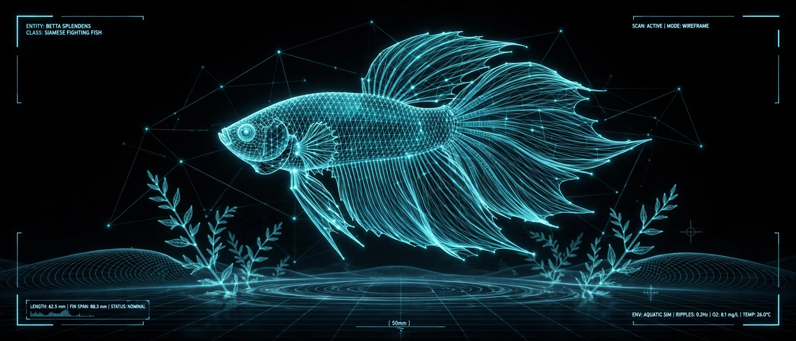
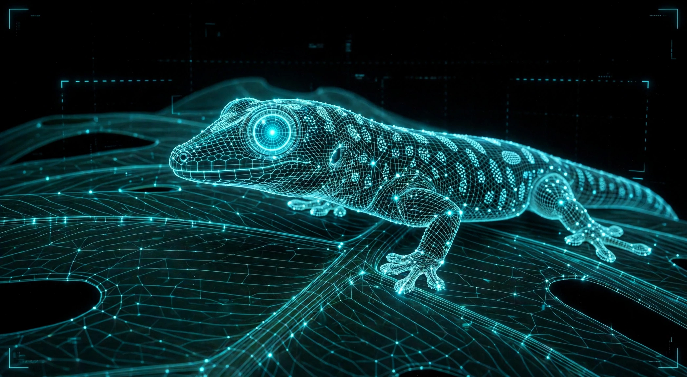

Your Discord server, run from your pocket. Nova Bot is a complete Discord bot that lives on an Android phone instead of a computer or a rented server, and this dashboard is where you look after her. Never run a bot before? That is fine. This page explains, in plain terms, what she is and how she works.
What Nova Bot is
The helper that runs your Discord server day to day, managed from one app:
Welcomes new members with a card when they join
Passes private messages to your staff through modmail
Builds ready-made server layouts from templates
Handles everyday jobs like scheduled posts, polls and leveling
No PC left running and no hosting bill
How she runs
She lives on the phone itself, the phone is the server:
Runs through Termux right on the phone, not on a computer or rented server
Stays switched on and connected to the internet
Holds a live connection to Discord around the clock, that connection is called the gateway
Checks in constantly, that steady check-in is the heartbeat
Shown as online honestly, the dashboard shows her online only while she really is
How she looks after your server
Every community she serves stays separate and looked after:
Its own separate settings for every server she joins, so communities never get mixed up
Several servers at once, she can help in all of them together
Pause just one server when you want a break from it, and resume it later
Nothing is deleted and nobody has to be re-invited
You stay in control
She is yours, and the keys stay with you:
Your bot token stays on your phone, the private key that says the bot is yours, never shared
Back up your whole setup before making changes
Rollback switch returns things to the previous build if an update ever misbehaves
Trying something new never has to feel risky
Getting started, gently
Take it one step at a time:
Setup is five short steps
Check the Requirements tab for the minimum your phone needs before you begin
One tab at a time, this Overview explains the idea, Plugins describes the extras you can add
Pop-up windows walk through setup and helpful tips whenever you want them
EVERY PLUGIN IN THE BOT
Every plugin that ships inside Nova Bot, grouped by what it does. Tap any name to see what that plugin does, tap it again to close the description.
SETUP & LAYOUT
MEMBERS & WELCOME
CONTENT & COMMUNITY
SUPPORT & MODERATION
POSTING & AUTOMATION
DASHBOARD & MEDIA
REQUIREMENTS
The minimum you need to run Nova Bot. There is no PC and no hosting account in the list, the phone in your pocket is the server, so it has to be able to stay awake, stay connected, and stay yours.
ANDROID
10+
TERMUX
Required
FREE STORAGE
500 MB
RAM, MIN / RECOMMENDED
1 GB/3 GB
An Android phone, Android 10 or newer
Nova Bot v1.1 installs as a single 63 MB APK and runs on the phone itself. Android 10 or newer is the minimum; a current phone on Android 14 or later handles the alarm and battery rules best.
ANDROID 10+
RAM, 1 GB minimum, 3 GB recommended
The bot is light: the live bot process itself uses only about 48 MB of RAM. 1 GB is the minimum to run her, but on a 1 GB phone Android takes most of the memory for itself and may kill Termux and the bot in the background, so she runs without staying alive reliably. 3 GB is the recommended amount for comfortable running, where she stays alive in the background alongside the dashboard.
1 GB MIN · 3 GB RECOMMENDED
Termux, with Python Pillow installed
The bot runs through Termux on the phone. Member cards, welcome cards, and all Image Studio artwork render through Pillow, installed from Termux's own package, setup verifies it before calling the install done.
TERMUX + PILLOW
pkg install python-pillow
Storage, 500 MB free, minimum
The APK itself is 63 MB, but Termux, the bot bundle, card artwork, and backups need room to breathe. Keep at least 500 MB free so a backup or a rollback never fails halfway through.
500 MB FREE
Voice pieces, only if you want voice
The voice plugin (soundboard, YouTube music, text-to-speech) needs ffmpeg, yt-dlp and espeak, installed in Termux during setup. They are optional and labelled in setup: skip them and everything except voice still works; install them later any time from the dependency check.
VOICE, OPTIONAL
Three Android permissions
Exact alarms, Battery set to Unrestricted, and Usage access. All three are required, without them Android puts the bot to sleep and the dashboard stops seeing a fresh heartbeat.
3 PERMISSIONS
Your own Discord bot token
Create a bot application in the Discord Developer Portal, turn on the Message Content intent, copy its token into the app, and invite the bot to your server. The token is the bot's identity, it stays on your phone, and anyone holding it can act as the bot, so treat it like a password.
BOT TOKEN
A steady internet connection
The bot holds a live gateway connection to Discord around the clock. Wi-Fi at home or a solid mobile signal both work, what it cannot survive is a connection that drops for long stretches, because ONLINE on the dashboard means a heartbeat fresher than 90 seconds.
ALWAYS ONLINE
Power
A phone-hosted bot is only up while the phone is. Keep it charged, plugged in where it lives is ideal, or the server goes quiet when the battery does.
KEEP IT CHARGED
FREQUENTLY ASKED QUESTIONS
The questions every new Nova Bot owner asks first. Tap a question to open the answer.
Does Nova Bot need Termux?
Yes, Termux is the terminal home the bot process lives in on the phone:
Termux is required, the bot runs through it on the phone itself, not on a PC or a rented server
Install Termux, then open Nova Bot once so Android registers the app, its widgets and its alarms
Everything else is set up from the app, Termux just has to be there and left alone to run
Does the bot stay online when my phone sleeps?
The screen can sleep, Android putting the bot itself to sleep is what takes her offline:
Screen off is fine, she keeps her live Discord connection in the background
Three grants keep her awake: Exact alarms, Battery set to Unrestricted, and Usage access, without them Android puts Termux and the bot to sleep
Power and signal still rule, a flat battery or a long connection drop takes her offline like anything else
The dashboard tells the truth, she only reads ONLINE on a gateway heartbeat fresher than 90 seconds
Can I run the same bot token in two places?
No, one bot per token:
A token is one bot's identity, the private key that says the bot is yours, and it stays on your phone
Two copies on one token fight over the same Discord connection, so run one install per token
One install still covers every server the bot is invited to, each with its own separate settings
Want a second bot? Create a second application in the Discord Developer Portal and give it its own token
Why does the bot need Pillow?
Every image the bot posts is drawn, not downloaded, and Pillow is what draws them:
All card renders go through Pillow, welcome cards, member ID cards and client cards
Image Studio artwork too, the wireframe designs the bot posts are rendered by Pillow in Termux
One package installs it:pkg install python-pillow, and setup verifies the import before it calls the install done
Blank or missing cards? Pillow is the first thing to check
Does the bot need admin in my server?
For the full feature set, yes, her everyday jobs reach across the whole server:
Building layouts creates categories, channels and roles in one pass
Member and client approvals grant roles and open private channels
Moderation tools warn, time out, kick, ban and purge
Inviting her with Administrator covers all of it in one grant, and you still control what she does with per-server toggles and the per-server Stop
What can my bot do if I don't give it admin?
Plenty, admin is only needed for the jobs that change the server itself. Invite her without Administrator and she still works as a fun, everyday chat bot:
GIF Search, the /gif command: give it a keyword and she posts a GIF straight into the chat
YouTube Search, the /yt command searches YouTube from inside Discord and posts the first result
Polls, run polls so members can vote on the questions you put to the server
What she can't do without admin: building layouts, templates and channels, granting roles for member and client approvals, and the moderation tools, warn, timeout, kick, ban and purge all change the server, so they wait for admin
Change your mind later? Grant Administrator any time and the full feature set unlocks, there is nothing to reinstall or set up again
CHANGELOG & UPDATES
The log starts fresh with v1.0 Phelsuma, the first public release, and now tracks both versions of Nova Bot, Android and Desktop, newest first. Every build from here on is written up in this list, and each one is tested before it ships.
Android v1.1
LATEST ANDROID22 NOV 2026
Android v1.1, day gecko themed. The dashboard now carries a banner at the top of every page, with the same wireframe banner art as the desktop dashboard, so each page has its own illustrated header.
Per-page banners: all 32 dashboard pages get a banner at the top, one per page, using the desktop Betta banner art
Same core, same install: installs over v1.0, no uninstall, no re-invite
Desktop v1.1.0 Betta
FIRST DESKTOP RELEASE22 NOV 2026
Desktop v1.1.0, the Betta update, and the first desktop release. The same Nova Bot core, running directly on a computer with Node.js as a self-contained bundle, with the desktop dashboard and the betta fish theme. Desktop releases carry a fish name and fish theme art, the way Android releases carry a gecko name and gecko art.

First desktop release: the bot as a desktop app, with the Betta fish theme and its wireframe betta theme art
Desktop dashboard: the full dashboard on your computer, with live status, plugins and the voice page
Self-contained bundle: runs with Node.js on your computer, no phone needed
v1.0 Phelsuma
FIRST PUBLIC RELEASE21 NOV 2026
The first public release, and the launch build. Nova Bot restarts at v1.0 and takes a gecko name: Phelsuma, the day gecko. Every release from here carries a new gecko name and its own gecko theme art, and the update log starts fresh from this entry. For launch, we set up the GitHub repository, configured the application, and dialed in all of the settings, so the bot, the downloads and the project home all went live together and ready to use.
First public release: the whole bot, public for the first time, wearing the Phelsuma day-gecko theme and its wireframe gecko theme art
Launched on GitHub: the GitHub repository was set up for launch, with the v1.0 Phelsuma release published there and the APK download served from the release
Application configured: the application was configured and all of the settings were dialed in for launch, so a fresh install starts from the tuned setup
Custom header image fixed: a custom header image set in the app now actually applies, with the colour indicators staying on top
Starboard channel toggle: Starboard can generate its own channel, and plugins that need a channel or posts show indicators and point you to generate them
Channel Manager label fixed: the stray CATEGORY label beside channel names is gone
Compose starts empty: Compose opens with no target channels pre-selected
Guided-setup illustrations: every guided-setup step now carries a Nova-branded illustration
Soundboard page: Soundboard gets its own page, with categorize and filter, and delete, rename, change file and change preview image
Music page: Music gets its own page, a player with a file explorer below it to organize files and load albums
TTS page: text-to-speech gets its own page, and the bot-side TTS fault is fixed
Header buttons: Soundboard, Music and TTS each get a button on the right side of the header when enabled
DOWNLOAD NOVA BOT
Nova Bot now comes in two versions with the same core: Android v1.1 for your phone and Desktop v1.1.0 Betta for your computer. Both run the same bot, moderation, tickets, voice and automation. Pick the one that fits where you run it. Android installs over the previous build: no uninstall, no re-invite.

ANDROID
v1.1
Android v1.1, day gecko themed. The same Nova Bot core, hosted on your Android 10+ phone: the bot runs on the device itself through Termux, with the dashboard and all the plugins in the app. Every Android release carries a new gecko name and new gecko art.
Hosted on GitHub - github.com/jordanalbiar/nova-android-bot/releases
Desktop v1.1.0, the Betta update, fish themed. The same Nova Bot core, running directly on a computer with Node.js as a self-contained bundle, with the desktop dashboard and the betta fish theme. Every desktop release carries a new fish name and new fish art.
Hosted on GitHub - github.com/jordanalbiar/nova-desktop-bot/releases
Grab either build straight from the direct link: no account, no sign-up. Android v1.1 brings per-page banners to every dashboard page, with the day gecko theme. Desktop v1.1.0 Betta brings the same bot to your computer as a self-contained bundle with the desktop dashboard. Everything there is to download sits in the one box below: the two builds as the main download buttons, with the two PDF guides together as a pair underneath them. The Breakdown Chart is a 9-page PDF showing how the bot is built: how the Discord gateway, the Android app and dashboard, the Termux engine and your servers all connect. Next to it sits What It Does and How It Works, a 16-page PDF breaking down everything the bot has: all 37 commands grouped by who can use them, the join flow, tickets, voice, automation and the rest, and the mechanism behind each part.
DOWNLOADS, EVERYTHING IN ONE PLACE
Hosted on GitHub - github.com/jordanalbiar/nova-android-bot/releases
Hosted on GitHub - github.com/jordanalbiar/nova-desktop-bot/releases
Inside the app, in one picture: the dashboard home, the guided setup start check, welcome and member cards, system and runtime, plugins, the post composer, the channel manager and diagnostics.
Soundboard, Music and TTS are off by default: switch each one on in the app once setup has installed its Termux pieces (ffmpeg, yt-dlp and espeak). Keyword triggers also need the Message Content intent in the Discord Developer Portal; /soundboard play works without it.
The Breakdown Chart, 9 pages showing how the bot is built, how the gateway, the app and dashboard, the Termux engine and your servers all connect, opens in its own window from the red button above.
What It Does and How It Works, the 16-page functional guide to everything the bot has and how each part does its job, opens in its own window from the burgundy button above.
DOWNLOAD FROM GITHUB
The v1.1 APK is hosted on GitHub. The main download button above goes straight to the GitHub release asset, and the full source, release notes and files live in the public repository.
Nova Bot v1.1 puts a complete Discord bot on your phone. Here is what you can do with her: build and run your server, look after your members, and post, play and speak in your community, all from the app.
RUN AND BUILD YOUR SERVER
RUN IT ALL FROM YOUR PHONE
You can run a complete Discord bot from an Android phone, with the dashboard and all 36 plugins in one install. No PC to leave running and no rented server to manage.
BUILD A SERVER FROM A TEMPLATE
Pick a layout for gaming, design, sports, media or movies and generate its categories, channels, roles and starter posts in one pass, then adjust the result by hand.
SET UP STEP BY STEP
Follow the guided setup, where each step shows an illustration of what it is asking for, so you can configure the bot one step at a time and see what each choice does.
MANAGE YOUR CHANNELS
Open Channel Manager to review and organize your categories and channels in one place, without digging through Discord settings channel by channel.
MAKE IT YOURS
Set a custom header image in the app and pick a theme for the bot. The status colour indicators stay visible on top of your image, so your dashboard looks personal and stays easy to read.
POST ONLY WHERE YOU CHOOSE
In Compose, pick the target channels for each post before you send it. Every post goes only to the channels you select for that post.
MEMBERS, SUPPORT AND COMMUNITY
WELCOME NEW MEMBERS
Greet people when they join with a welcome message and welcome card in a channel you pick, and send each new member a getting started DM that you write.
GIVE MEMBERS THEIR OWN CARDS
Generate welcome cards, member ID cards and profile cards for your members, drawn as images by the bot itself, for joining, for approval and any time with /profile.
DECIDE WHO BECOMES A MEMBER
Let visitors apply through the member request panel, then approve or deny each request in a private review channel. Approved members get their role and their member card.
HELP MEMBERS PRIVATELY
Let members reach your staff through modmail, support tickets and a private contact channel, so questions and problems are handled one to one instead of in public chat.
KEEP THE SERVER SAFE
Warn, time out, kick, ban and purge messages when you need to, review the warnings on a member, and check the activity log to see what the bot has done and when.
GIVE MEMBERS REASONS TO TAKE PART
Run polls your members can vote in, let members earn levels as they take part, and turn on Starboard to highlight starred posts in a Starboard channel you can generate from its toggle.
VOICE, MUSIC AND SPEECH
PLAY MUSIC IN VOICE
Use the Music player to play tracks in your voice channel, and use the file explorer below it to organize your files and load albums.
BUILD YOUR OWN SOUNDBOARD
Categorize and filter your sounds, and rename, delete, swap the file or change the preview image on any of them, so your soundboard stays the way you want it.
SPEAK WITH TEXT TO SPEECH
Type on the TTS page and have the bot speak your words aloud in voice, for announcements, jokes or helping a member who cannot use a microphone.
REACH VOICE TOOLS IN ONE TAP
Turn on Soundboard, Music or TTS and each one puts a button on the right side of the header, so you can open it in one tap from anywhere in the app.
Want the full list? Open the Plugins tab to browse all 36 plugins by name, and tap any name to see exactly what you can do with that plugin.
GET SET UP IN FIVE STEPS
Install the APK and open Nova Bot once so Android registers the app, its widgets, and its alarms.
Install Pillow in Termux. Member cards, welcome cards, and the Image Studio all render through it, the setup checks import PIL before it calls the install done.
pkg install python-pillow
Grant the three permissions: Exact alarms, Battery set to Unrestricted, and Usage access. Without them Android puts the bot to sleep.
Connect your server from the dashboard, then pick a theme, templates for gaming, design, sports, media, and movies generate channels, roles, and starter posts in one pass.
Check the heartbeat. The dashboard only calls the bot ONLINE on a fresh gateway heartbeat, if it ever reads “process alive, Discord disconnected,” restart from the app and watch the status flip.
NOVA BOT BREAKDOWN CHART, PDF
How the bot is built, the system, connected, and how the modules stack. All 9 pages are shown below: scroll through them here, or open the original PDF file itself.
A complete breakdown of what Nova Bot has, every function, what it does for the people in a server, and the mechanism it uses to do it. All 16 pages are shown below: scroll through them here, or open the original PDF file itself.
The bot's own full guide, every page explained, from first setup to the glossary. Download the documentation
HELPFUL TIPS
Field notes from running Nova Bot as a daily driver, the things that actually keep a phone-hosted bot alive and honest.
01 “Online” means heartbeat, not hope
The dashboard only reports ONLINE on a fresh gateway heartbeat, under 90 seconds old. A running process with a stale heartbeat reads “process alive, Discord disconnected,” because that’s the truth. Trust the heartbeat, not the process list.
02 Pillow first, cards second
If member cards or studio images come out blank, Pillow is the usual suspect. Re-run the Termux install and verify the import before touching anything else:
python -c "import PIL"
03 Stop a server without leaving it
The bot is active in any server it’s invited to, no master switch to flip. Use the per-server Stop to pause one community and Resume when you’re ready; nothing gets uninvited and no settings are lost.
04 Keep Android from sleeping on the job
Three grants keep the bot alive on a phone: Exact alarms, Battery → Unrestricted, and Usage access. Set them once after install; if a phone update resets them, the watchdog symptoms come back first.
05 Back up before you wipe
The wipe-clean flow is paced and thorough, that’s the point of it. Run a backup first, and remember the rollback switch covers the bot bundle and config, not the APK itself.
06 One theme, everywhere
Pick the theme in the dashboard and it carries across the app, the splash screen, and the posts the bot makes, one accent, one wireframe look, so the whole bot reads as a single product.
YOU’VE BEEN INVITED TO JOIN
Nova Community
You have been invited to the Nova Community Discord server, follow along in the development, aid in beta testing, or show off what you have done with the Nova Bot.
This section is updated after every push or commit to the update log, the newest entries land here automatically.
WHAT'S NEW THIS WEEK
FROM THE UPDATE LOG
Last updated:
No updates in the log yet.
LEGAL
TERMS OF SERVICE & TERMS OF USE
Please read this section before you download Nova Bot. By downloading, installing, or using Nova Bot, you agree to the Terms of Service and Terms of Use below. If you do not agree, please do not download or use it.
BEFORE YOU DOWNLOAD
You are old enough to agree: you meet Discord’s minimum age for your country and you are legally able to accept these terms, or a parent or guardian accepts them for you.
The device is yours to install on: you own the Android phone, or have the owner’s permission, and you are allowed to install an APK and Termux on it.
Only download from this page: use the official download links in the Download tab above. Copies from other sites may be altered and are not supported.
Your bot token stays private: never share it. Anyone with your token can control your bot.
Back up first: back up your server settings and configuration before installing, updating, or wiping, as described in the tips on this page.
You accept it “as is”: Nova Bot is provided without warranties, as set out under Terms of Service below.
TERMS OF SERVICE
1. The service
Nova Bot is software that runs on your own Android phone through Termux and connects to Discord using a bot account and token that you provide. You run it yourself – it is not a hosted service run for you.
2. Your responsibilities
You are responsible for your bot, your token, and your servers, including settings, content, and actions taken through them.
You are responsible for keeping your phone, token, and backups secure.
You are responsible for any data, network, or device costs from running the bot.
3. Availability & changes
Features may change, break, or be removed in updates. There is no guarantee the bot will stay online, stay compatible with Discord, or work on every device. Support is provided on a best-effort basis through the Nova Community Discord linked above.
4. Provided “as is”
Nova Bot, the APK, the build PDF, and the documentation are provided “as is” and “as available”, without warranties of any kind, express or implied, including fitness for a particular purpose. To the fullest extent allowed by law, the makers are not liable for lost data, server damage, downtime, or other loss arising from downloading or using the bot. Use it at your own risk and keep backups.
5. Ending use
You may stop using Nova Bot at any time by stopping the bot and uninstalling it. Access or support may be withdrawn for use that breaks these terms or Discord’s rules.
TERMS OF USE
1. Your licence to use it
You are granted a personal, non-exclusive, revocable, non-transferable licence to download, install, and use Nova Bot for Discord servers that you own or are authorised to manage. No ownership of the software transfers to you.
2. Acceptable use
Follow Discord’s Terms of Service and Community Guidelines and all applicable laws at all times.
Do not use the bot to spam, harass, deceive, impersonate, infringe other people’s rights, or break into, overload, or abuse Discord or any other system.
Only grant the bot permissions your server actually needs, and only in servers you are authorised to manage.
3. What not to do
Do not sell Nova Bot, present modified copies as the official build, or remove its credits and notices.
Do not share, publish, or sell your bot token, and do not use another person’s token without their permission.
Do not use the bot in a way that puts members’ personal information at risk.
4. Your content
Content you and your members create stays yours. You are responsible for having the right to use it and for moderating it in your servers.
PRIVACY, DATA & THIRD PARTIES
1. Where your data lives
Nova Bot runs on your phone. As described on this page, your bot token stays on your phone and your settings and data are stored in files on your device that you can back up and restore. Whoever has access to your phone and those files has access to them – protect your device.
2. What the bot can see
To do its job, the bot can access the Discord information its permissions allow in the servers it joins – for example members, channels, messages, and direct messages to the bot, depending on the plugins and permissions you enable. Review permissions before you invite or enable a feature.
3. Third-party services
Nova Bot is not affiliated with, endorsed by, or sponsored by Discord Inc. Discord is a trademark of Discord Inc.
It also relies on third-party software and services, including Android, Termux, Node.js, and Discord.js. Their own terms and privacy policies apply to your use of them.
Names such as Facebook, Instagram, YouTube, Rumble, and GitHub in the footer above belong to their respective owners and do not imply endorsement.
4. Changes to these terms
These terms may be updated when Nova Bot changes. The version on this page at the time you download is the version that applies, so check back before downloading a new build.
Questions about these terms? Ask in the Nova Community Discord linked above before you download.
Last updated: November 22, 2026 · Applies to Nova Bot v1.1, Desktop v1.1.0 Betta and the downloads offered on this page.